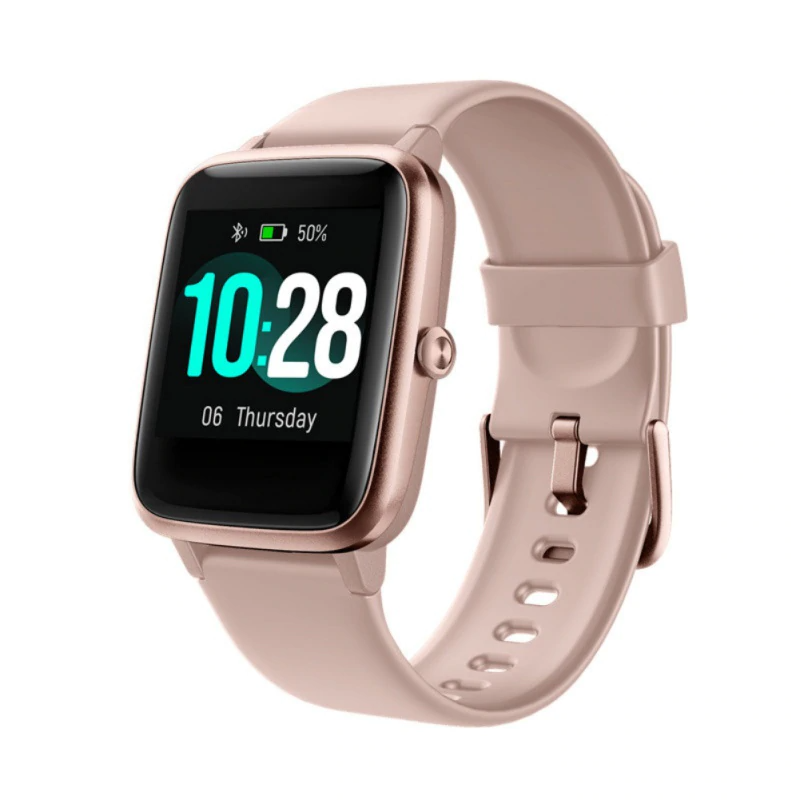
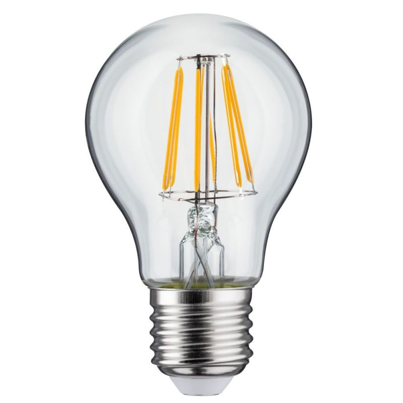
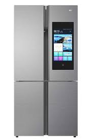

Les montres
Ce sont les montres connectées qui ont lancé la mode des objets connectés. Elles ont de multiples intérêts tels que :
- lire les messages reçus sur son téléphone,
- mesurer son rythme cardiaque
- ou mieux : donner l'heure !
Les lampes
Les lampes connectées peuvent diffuser plusieurs couleurs, gérables depuis son téléphone. Certaines s'allument automatiquement.
En savoir plusLes casques

Le casque connecté sert à se débarasser du fil, mais il faut le charger. Une autre utilité du casque sans fil est de pouvoir se connecter à plusieurs sources sans craindre que le fil n'est pas compatible avec cet appareil.
En savoir plusLes réfrigérateurs
Le frigo connecté sert à simplifier la gestion des aliment contenus dans le frigo en envoyant des message au portable du client lui signalant qu'il n'a plus de lait et qu'il devrait en chercher.
En savoir plus